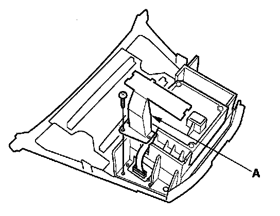
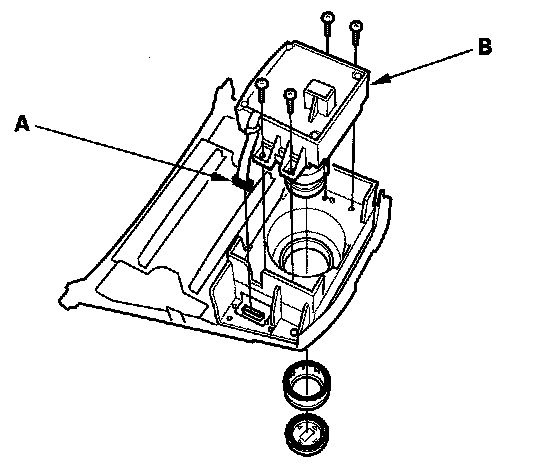

Accessory Control Display: Service and Repair
Interface Dial Removal/Installation1. Remove the audio unit.

2. Remove the harness cover (A).

3. Disconnect the interface dial connector (A), then remove the interface dial (B).
4. Install the dial in reverse order of removal.